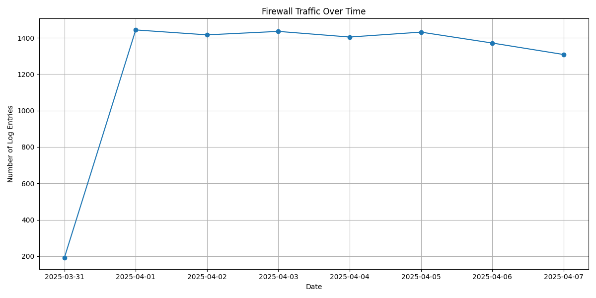
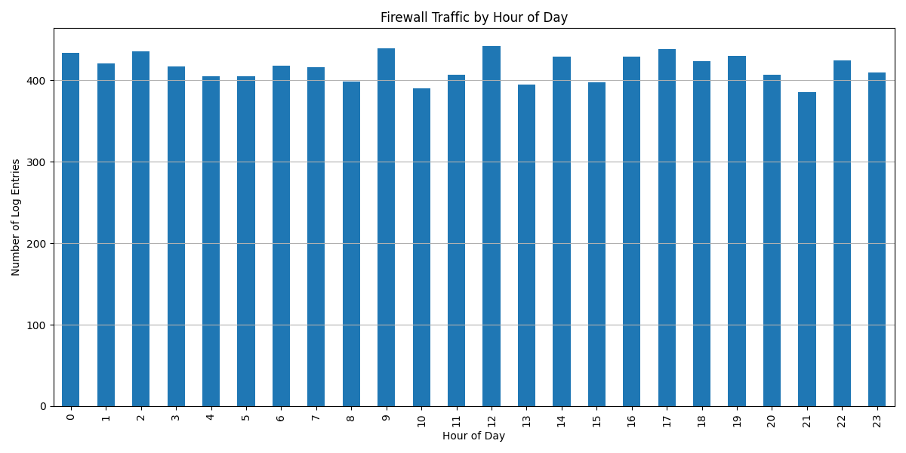
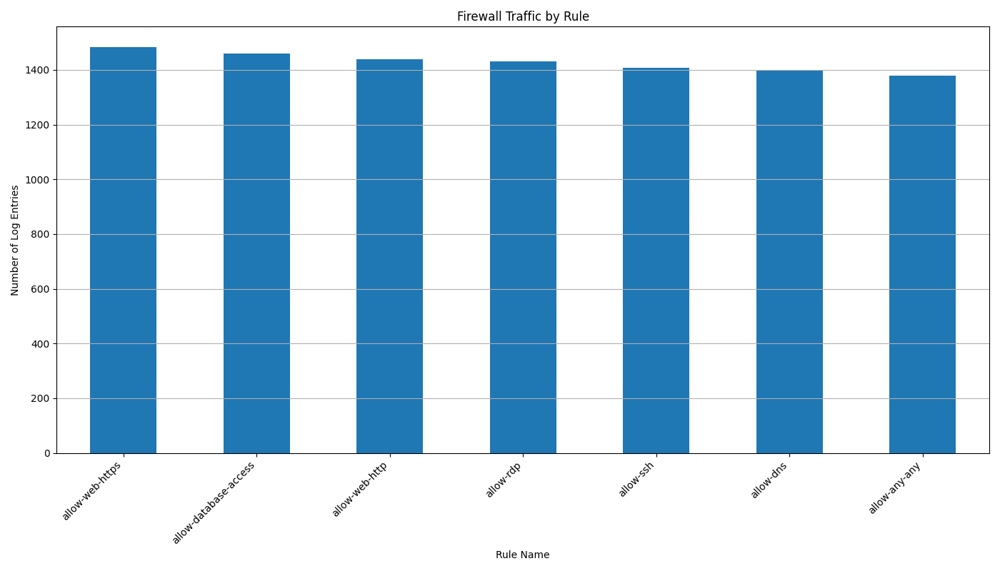

Traffic Visualizations
Traffic Over Time
Traffic by Hour of Day
Traffic by Rule
Traffic by Source Zone

This report analyzes firewall logs and rules to identify optimization opportunities and security improvements.
| Source IP | Count |
|---|---|
| 192.168.2.162 | 494 |
| 192.168.2.245 | 460 |
| 192.168.3.18 | 446 |
| 192.168.4.100 | 443 |
| 192.168.1.120 | 439 |
| 192.168.3.219 | 439 |
| 192.168.3.15 | 436 |
| 192.168.4.109 | 436 |
| 192.168.4.55 | 431 |
| 192.168.2.86 | 430 |
| Destination IP | Count |
|---|---|
| 151.101.1.69 | 527 |
| 172.217.160.78 | 527 |
| 104.244.42.65 | 527 |
| 31.13.72.36 | 511 |
| 52.94.236.248 | 506 |
| 199.232.69.194 | 506 |
| 13.107.42.14 | 484 |
| 151.101.193.69 | 481 |
| 23.185.0.2 | 477 |
| 142.250.190.46 | 476 |
| Port | Count |
|---|---|
| 3306 | 1585 |
| 443 | 1584 |
| 3389 | 1540 |
| 80 | 1537 |
| 22 | 1529 |
| 53 | 1507 |
| 123 | 128 |
| 21 | 125 |
| 25 | 121 |
| 161 | 118 |
| Port | Count |
|---|---|
| 23 | 110 |
Detected 5834 log entries (58.34%) outside normal business hours (8 AM - 6 PM).
| Rule Name | Current Configuration | Recommendation | Optimized Configuration |
|---|---|---|---|
| allow-web-https |
Source: 192.168.0.0/16 Destination: any Service: https Application: web-browsing |
Restrict destination address to 151.101.0.0/16, 104.244.42.65/32, 31.13.72.36/32, 23.185.0.2/32, 142.250.190.46/32, 172.217.160.78/32, 13.107.42.14/32, 199.232.69.194/32, 52.94.236.248/32 |
Source: 192.168.0.0/16 Destination: 151.101.0.0/16, 104.244.42.65/32, 31.13.72.36/32, 23.185.0.2/32, 142.250.190.46/32, 172.217.160.78/32, 13.107.42.14/32, 199.232.69.194/32, 52.94.236.248/32 Service: https Application: web-browsing |
| allow-web-http |
Source: 192.168.0.0/16 Destination: any Service: http Application: web-browsing |
Restrict destination address to 31.13.72.36/32, 151.101.0.0/16, 199.232.69.194/32, 172.217.160.78/32, 142.250.190.46/32, 23.185.0.2/32, 104.244.42.65/32, 52.94.236.248/32, 13.107.42.14/32 |
Source: 192.168.0.0/16 Destination: 31.13.72.36/32, 151.101.0.0/16, 199.232.69.194/32, 172.217.160.78/32, 142.250.190.46/32, 23.185.0.2/32, 104.244.42.65/32, 52.94.236.248/32, 13.107.42.14/32 Service: http Application: web-browsing |
| allow-ssh |
Source: 192.168.0.0/16 Destination: 10.0.0.0/24 Service: ssh Application: ssh |
This rule is marked as risky and should be reviewed |
Source: 192.168.0.0/16 Destination: 10.0.0.0/24 Service: ssh Application: ssh |
| allow-rdp |
Source: 192.168.0.0/16 Destination: 10.0.0.0/24 Service: rdp Application: rdp |
This rule is marked as risky and should be reviewed |
Source: 192.168.0.0/16 Destination: 10.0.0.0/24 Service: rdp Application: rdp |
| allow-dns |
Source: 192.168.0.0/16 Destination: 8.8.8.8, 8.8.4.4 Service: dns Application: dns |
No optimization needed | N/A |
| allow-database-access |
Source: 192.168.2.0/24 Destination: 10.0.1.0/24 Service: mysql, mssql Application: mysql, mssql |
No optimization needed | N/A |
| allow-any-any |
Source: any Destination: any Service: any Application: any |
Restrict source address to 192.168.0.0/16; Restrict destination address to 10.0.0.0/16, 151.101.0.0/16, 142.250.190.46/32, 199.232.69.194/32, 172.217.160.78/32, 13.107.42.14/32, 31.13.72.36/32, 23.185.0.2/32, 104.244.42.65/32, 52.94.236.248/32; Restrict service to https, mssql, dns, smtp, rdp, ftp, ssh, http, snmp, mysql, ntp, custom-ports-23; This rule is marked as risky and should be reviewed |
Source: 192.168.0.0/16 Destination: 10.0.0.0/16, 151.101.0.0/16, 142.250.190.46/32, 199.232.69.194/32, 172.217.160.78/32, 13.107.42.14/32, 31.13.72.36/32, 23.185.0.2/32, 104.244.42.65/32, 52.94.236.248/32 Service: https, mssql, dns, smtp, rdp, ftp, ssh, http, snmp, mysql, ntp, custom-ports-23 Application: any |
This analysis has identified several opportunities to optimize your firewall rules and improve security: